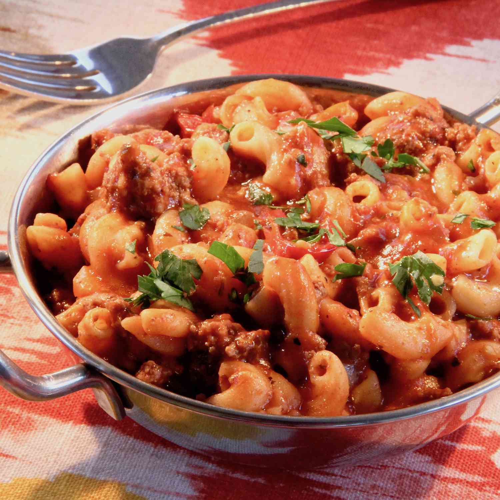

Hamburger Hotdish

Description
A classic dish from the American Midwest. A comforting dish for whenever you're cold or just need a hug
Ingredients
- 1 pound ground beef
- 2 cups elbow macaroni
- 1/2 large green bell pepper, coarsely chopped
- 1/2 large onion, chopped
- 1 (16 ounce) can tomato sauce
- 1 pound tomatoes, coarsely chopped
- 2 teaspoons Worcestershire sauce
- 1 teaspoon soy sauce
- 1 teaspoon salt
- 3/4 teaspoon dried basil
- 3/4 teaspoon dried oregano
- 1/2 teaspoon chili powder
- 1/4 teaspoon garlic powder
- 1 cup of beef broth
Steps
- Cook beef in large skill over medium heat, stirring occasionally, until browned, about 5 minutes. Transfer beef to a bowl.
- Cook macaroni, bell pepper, and onion in the same skillet over medium heat for 3 minutes. Add cooked beef, tomato sauce, tomatoes, Worcestershire sauce, soy sauce, salt, basil, oregano, ground black pepper, chili powder, garlic powder, and hot pepper sauce. Pour in beef broth. Cover skillet and simmer until macaroni is tender, about 15 minutes. Remove lid and simmer, stirring occasionally, until thickened, 5 to 10 minutes.